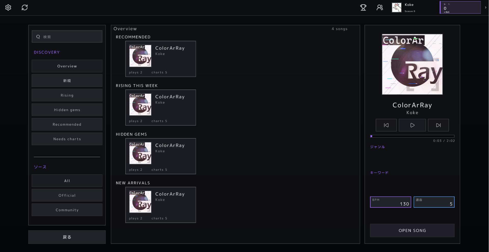
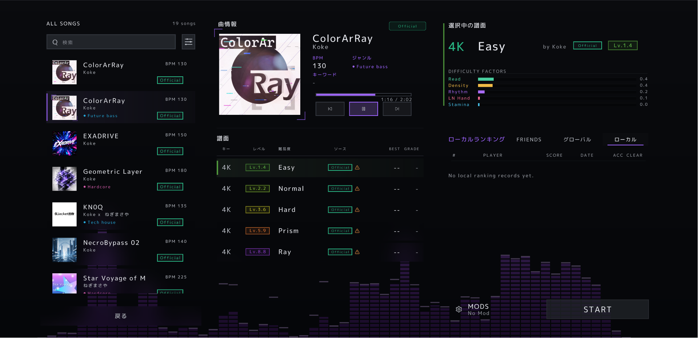
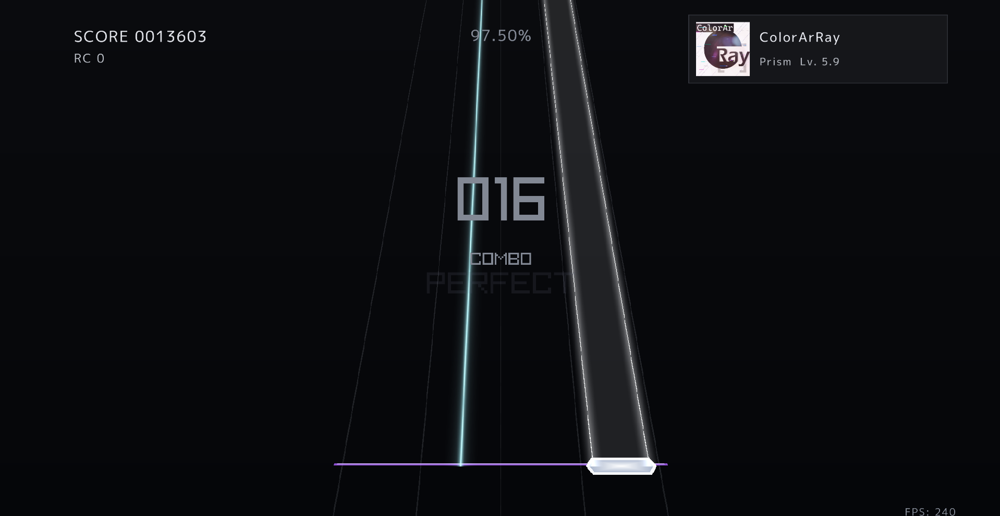
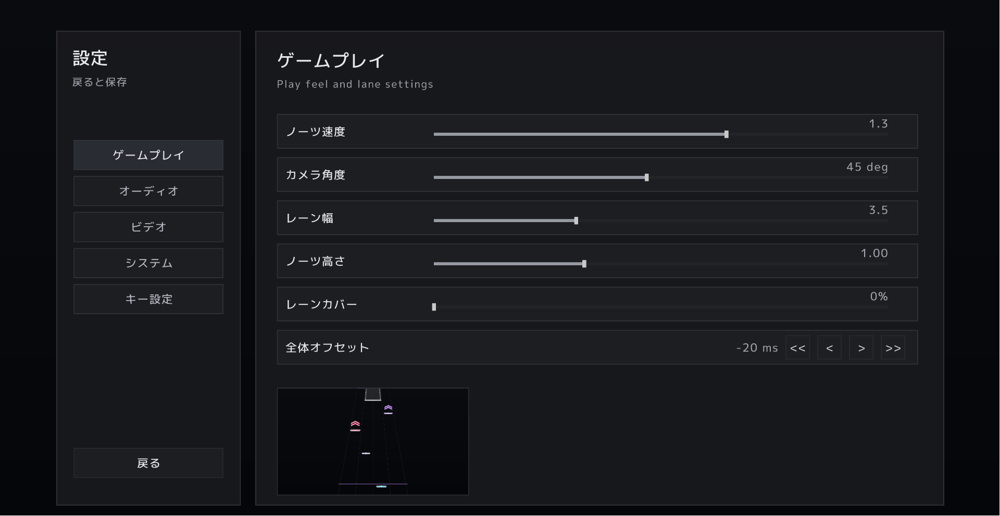

1好きな楽曲と
譜面データを用意
ブラウザから遊びたい楽曲・譜面データをダウンロードします。


HOW TO PLAY
raythmの基本的なプレイ方法を紹介します。
ブラウザから遊びたい楽曲・譜面データをダウンロードします。

自分に合った難易度を選び、プレイを開始します。

ラインとビートを読み、正確なタイミングで入力しましょう。

表示やプレイ環境を好みに合わせて調整できます。
